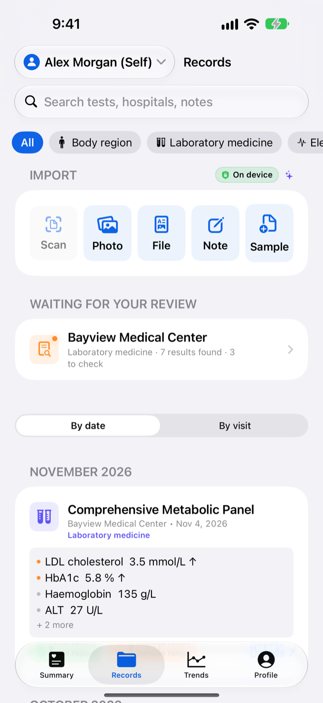
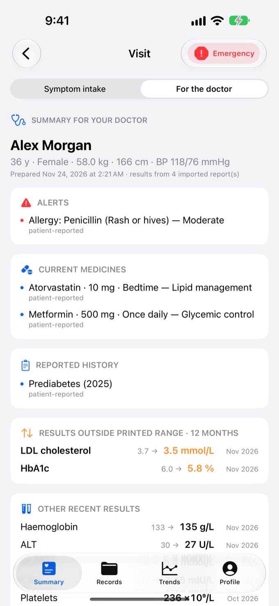

Import and check reports
- Open Records and tap + to scan with the camera, pick photos, import a PDF or image from Files, or write a manual note.
- Review the recognized items side by side with the original page. Tap any highlighted item to zoom directly onto that line and adjust it if needed.
- Confirm and save. Multi-section check-ups are kept together as a linked group with the overall conclusion on top.
View screenshot: Browse organized records


Summary and trends
- Open Summary to see recent key results, active medicines, allergies, vaccination reminders, and your Apple Health overview.
- Open Trends to compare results across visits and hospitals. Med-X converts compatible units into your preferred unit and shows each report’s printed reference range behind the chart.
- Tap Export in Trends whenever you want a spreadsheet copy of your lab results.
View screenshot: Lab trends and reference ranges

Prepare for a visit
- From Summary, tap Prepare for a visit.
- Use Symptom intake to note what prompted the visit and list questions you want to ask your doctor. If urgent warning signs appear, Med-X shows local emergency numbers right away.
- Switch to For the doctor to view a clean, clinician-friendly handoff sheet. Tap Show to doctor (full screen) in the clinic or share and print it as a PDF.
View screenshot: Prepare for a visit


Family profiles, medicines, and vaccines
- Tap the person switcher at the top left to add or switch between family members. Each member’s records stay separate.
- Open Profile to record allergies, basic vitals, past diagnoses, and important safety notes.
- Use Medicines to track active prescriptions and receive alerts if two entries share an active ingredient.
- Use Vaccinations to scan an immunization card or add doses manually and review routine schedule suggestions.
Apple Intelligence and on-device learning
- On supported devices, open Settings › Apple Intelligence to enable or disable optional on-device assistance for tidying unclear reports and drafting history summaries.
- In Settings › On-Device Learning, you can allow Med-X to learn layouts and test names from reports you confirm, or tap Forget everything learned at any time.
Apple Health, Face ID, and deleting data
- Open Settings › Apple Health to connect read-only recent health metrics for the device owner. Med-X never writes back to Apple Health.
- Turn on Require Face ID in Settings to lock Med-X when you leave the app.
- Deleted records move to the Recycle bin first so you can restore them if needed. Use Reset all data in Settings to erase everything permanently.
Feedback and diagnostics
- Open Settings › About › Feedback & Diagnostics to report an issue or share a suggestion by email (contact@yhxue.com).
- You can choose whether to attach a desensitized .mtxt diagnostic log and basic device information, and you can preview the exact file before sending.
- You can also export or clear the local diagnostic log at any time.
FAQ
Does Med-X require an internet connection? No. Scanning reports, reviewing trends, preparing visit summaries, and managing family profiles all work offline on your device.
Can Med-X diagnose a condition? No. Med-X organizes your own documents and notes. Always verify recognized figures against original reports and consult a qualified doctor.
What is inside a .mtxt diagnostic log? Only desensitized operational events, timings, and error codes from the past seven days. It never contains names, medical values, diagnoses, medicines, notes, or recognized report text.
Where can I get help? Use Feedback & Diagnostics in Settings › About, or email contact@yhxue.com.